Cyril
Cyril（英文名后常署 Cyril Gong，姓龚）是北航Toastmasters这段时期最核心的人物之一。在2018年的官员名单中，他担任俱乐部主席（President），"负责统筹俱乐部重大事项"，微信号 xygong121338。他是俱乐部的舵手，也是几乎能扛起所有角色的多面手——主持人（Toastmaster）、即兴主持（Table Topics Master）、点评官（General Evaluator / Prepared Speech Evaluator），他都信手拈来。
作为讲者，Cyril 的备稿演讲带着鲜明的个人色彩与温度：他在CC2阶段讲过《The right for man to drink milk tea（男人也有喝奶茶的权利）》，把生活里的小确幸讲成段子；也讲过《The long lost memory》，娓娓道来一段失落的记忆与重新出发的旅程。2018年春季比赛上，他登台讲述自己被北航录取、考研复试的故事，唤起在场每个人关于"被录取"那一刻的共同记忆。
最能体现他分量的，是2018年6月8日北航俱乐部第200次会议盛典。作为现任主席，他开场便邀请历届前任主席们登台，分享北航头马从2013年成立至今的成长史与"相遇便是缘"的故事，把一场盛典办成了俱乐部的精神传承仪式。他还为新学期第一次例会亲手设计了人生第一张海报，以"former president"的身份回来主持即兴环节，和大家聊那些人生中的"First Times"。
无论是统筹大局、串场救场，还是站上讲台讲自己的故事，Cyril 都在场。他是那种把俱乐部当成家、愿意为它付出时间与心力的头马人——既能定方向，也肯做最具体的事。
里程碑
- 2018-03-23 登台春季比赛 ↗参加2018春季国际演讲比赛，讲述被北航录取的故事。
- 2018-04-14 任俱乐部主席 ↗官员信息推送确认其为现任President，统筹俱乐部重大事项。
- 2018-06-08 主持第200次会议盛典 ↗作为现任主席开场，邀请历届前任主席分享北航头马自2013年的成长史。
- 2018-07-06 设计首张海报回归主持 ↗为新学期第一次例会亲手设计人生第一张海报，以前任主席身份主持即兴环节。
闯关之路 · Competent Communication
做过的演讲 · 3 场
担任过的职务 · 俱乐部官员
担任过的会议角色
为俱乐部做的事
- 担任北航Toastmasters主席，统筹俱乐部重大事项与方向
- 策划并主持第200次会议盛典，串起历届前任主席与俱乐部十年成长史
- 为新学期第一次例会亲手设计人生第一张海报
- 作为多面手承担主持、即兴主持、总点评等多种会议角色
- 推动与创业者俱乐部(Startups)、雅典娜(Athena)、信必优(Symbio)等兄弟俱乐部的联合活动与比赛
- 以亲身故事激励会员，传递'敢说'与'相遇便是缘'的俱乐部文化
头马里的人
照片墙 · 时间线
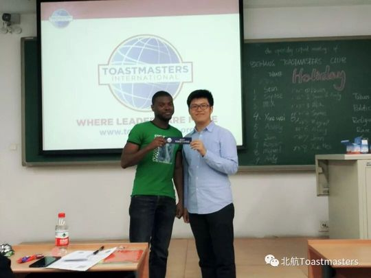
✓ ✓
✓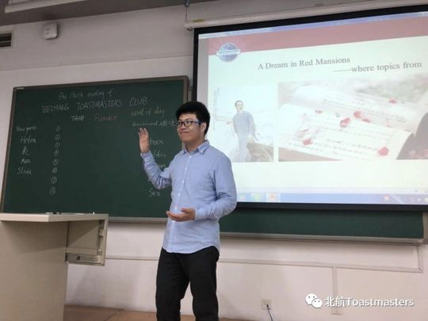
✓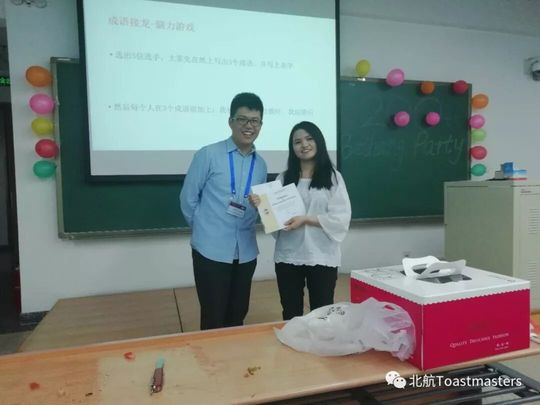
✓ ✓
✓ ✓
✓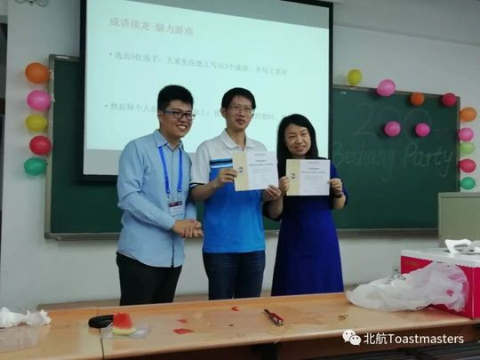
✓ ✓
✓ ✓
✓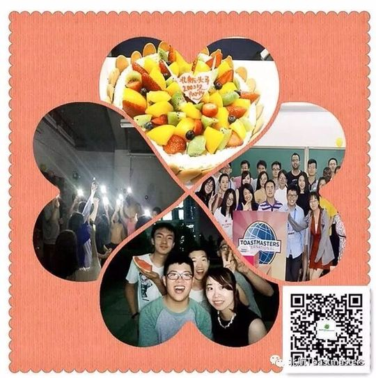
✓ ✓
✓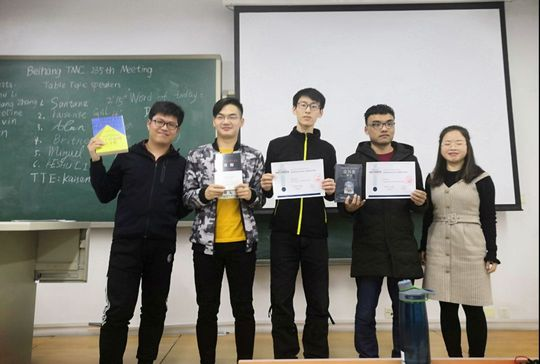
✓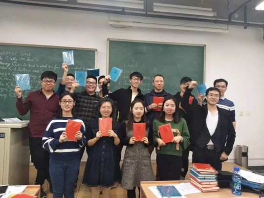
✓
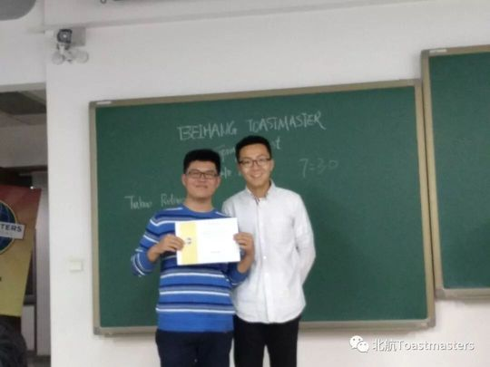

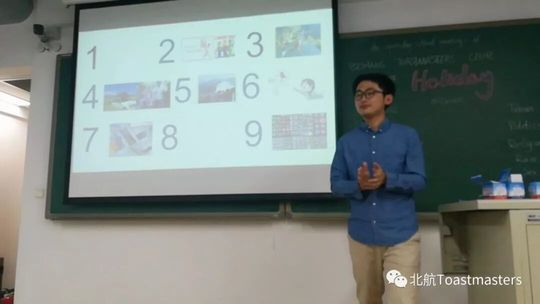

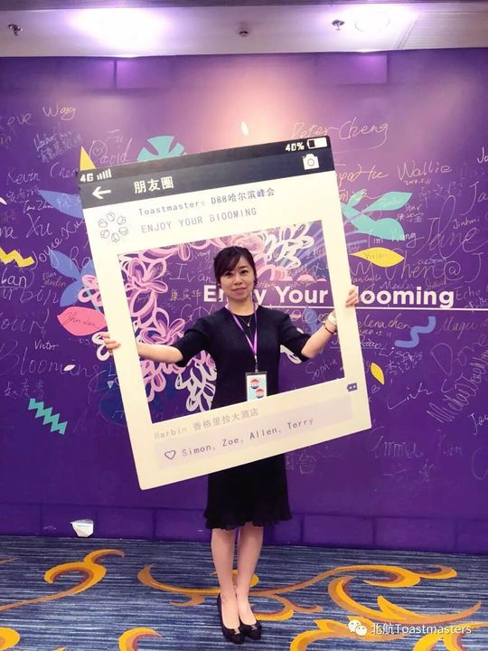
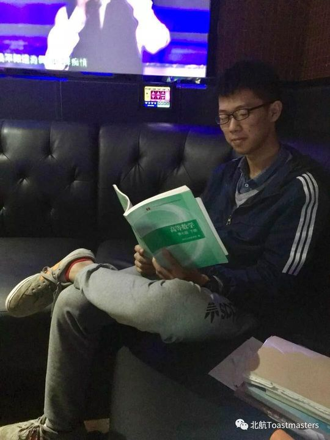

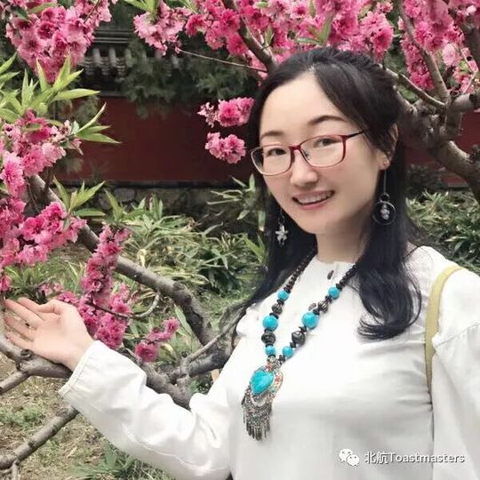
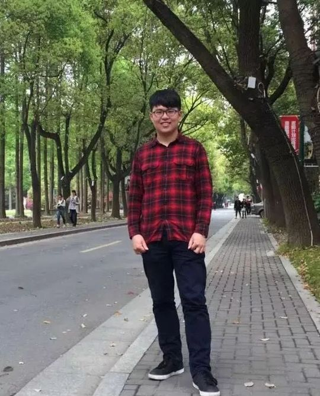
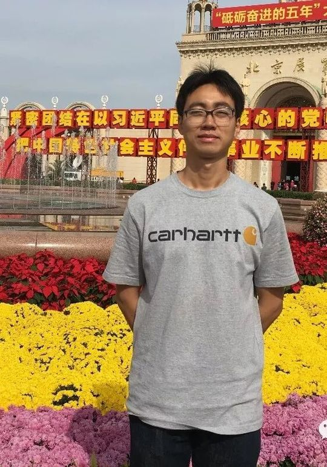

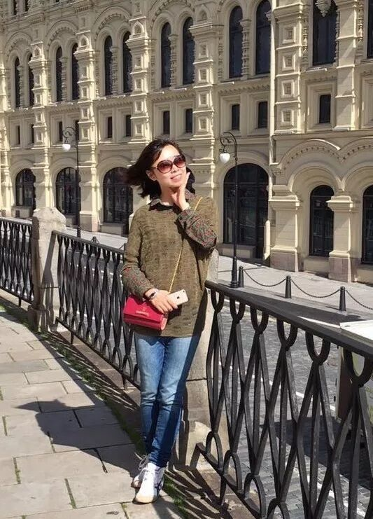


完整足迹 · 13 次出现（点开，每条可跳转原文）
- 2018-03-22第191次 · 参加国际演讲比赛
- 2018-03-23比赛中讲述被北航录取的故事
- 2018-04-12第192次 · 做备稿演讲The long lost memory
- 2018-04-14任主席，负责统筹俱乐部重大事项
- 2018-04-26第194次 · 担任即兴演讲主持人
- 2018-05-02第195次 · 担任会议主持人及即兴演讲主持人
- 2018-05-10第196次 · 做备稿演讲CC2 The right for man to drink milk tea
- 2018-05-30第199次 · 担任会议主持人
- 2018-06-13第200次 · 主持200次会议盛典并邀请历届前任主席分享俱乐部成长史
- 2018-06-15担任联合会议点评3
- 2018-07-05第203次 · 作为前任主席设计203次会议海报并担任即兴主持
- 2018-07-12第204次 · 担任204次会议General Evaluator
- 2018-09-03第211次 · 担任211次会议即兴演讲主持,引导探索Lost主题